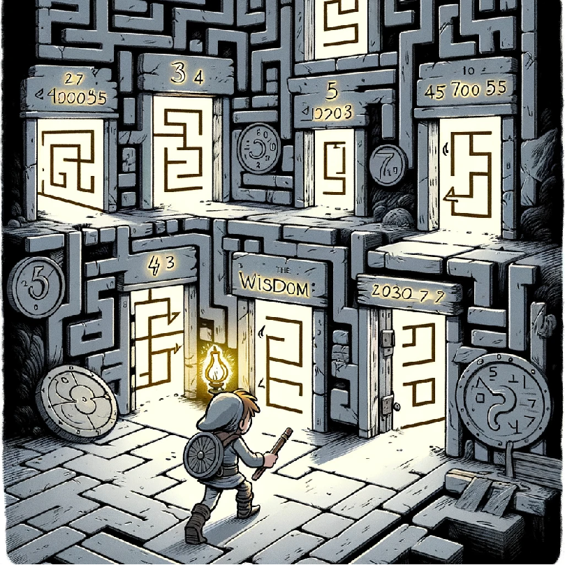

在地牢深处，英雄需要通过 120 扇连环门。每扇门上都有一个“智慧数”。
智慧数 是能表示为两个正整数 平方差 的数字。
公式：智慧数 = a² - b²
英雄已经发现了规律：
第 1 扇门：3 （因为 2² - 1² = 4-1 = 3）
第 2 扇门：5 （因为 3² - 2² = 9-4 = 5）
第 3 扇门：7 （因为 4² - 3² = 16-9 = 7）
👉 任务： 输入一个整数 n，告诉英雄第 n 扇门上的智慧数是多少。
我们有两种方法来找到这些智慧数。
我们开一个大数组 book。
双重循环枚举 a 和 b。
算出 val = a*a - b*b。
标记 book[val] = 1。
最后从 1 开始数，数到第 n 个被标记的数，就是答案。
直接利用数学规律生成列表：
1. 生成奇数列表：3, 5, 7...
2. 生成4的倍数列表：8, 12, 16...
3. 把两个列表加起来，排序，第 n-1 个就是答案。
使用标记数组 (桶) 来记录所有出现过的平方差。
#include <iostream> #include <vector> using namespace std; int main() { int n; cin >> n; // 1. 准备一个标记数组 (桶)，0表示不是智慧数，1表示是 // 题目只需第120个，数值不会很大，开2000足够 vector<int> book(2000, 0); // 2. 暴力枚举两个数 i 和 j (j > i) // 计算 j*j - i*i for (int i = 1; i < 100; i++) { for (int j = i + 1; j < 100; j++) { int val = j * j - i * i; // 如果算出的结果在范围内，做个记号 if (val < 2000) { book[val] = 1; } } } // 3. 数数：找到第 n 个被标记为 1 的数字 int count = 0; for (int k = 1; k < 2000; k++) { if (book[k] == 1) { count++; // 找到一个！ if (count == n) { // 是第 n 个吗？ cout << k << endl; // 输出这个数 break; } } } return 0; }
利用数学规律：智慧数 = 奇数(>=3) U 4的倍数(>=8)。
# 1. 读入 n n = int(input()) a = [] # 2. 生成奇数序列 (3, 5, 7...) # 2*k+1，k从1开始 => 3, 5, 7... for k in range(1, 250): a.append(2 * k + 1) # 3. 生成 4 的倍数序列 (8, 12, 16...) # 4*k，k从2开始 => 8, 12, 16... for k in range(2, 250): a.append(4 * k) # 4. 排序 a.sort() # 5. 输出第 n 个 (下标是 n-1) print(a[n - 1])